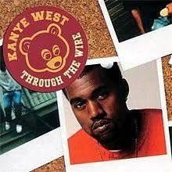

"Through the Wire" is the debut single by American rapper Kanye West. West wrote and recorded the song with his jaw wired shut after a car accident in October 2002.
The song samples Chaka Khan's 1985 single "Through the Fire" and was released on the last day of September 2003 as the lead single from his debut album The College Dropout (2004).
“Through the Wire” is now seen as a defining moment in Kanye’s career and an iconic song in early 2000s hip-hop.